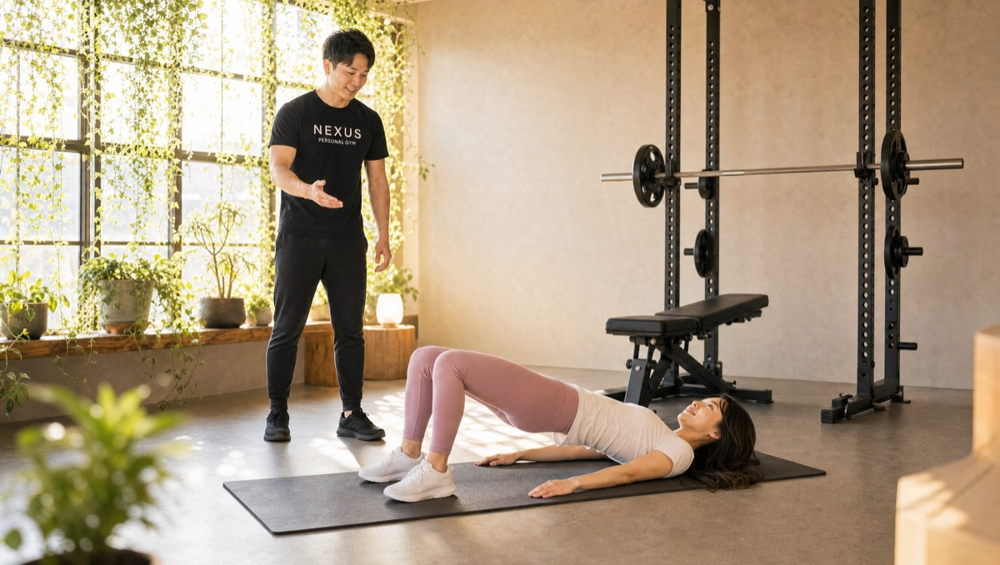
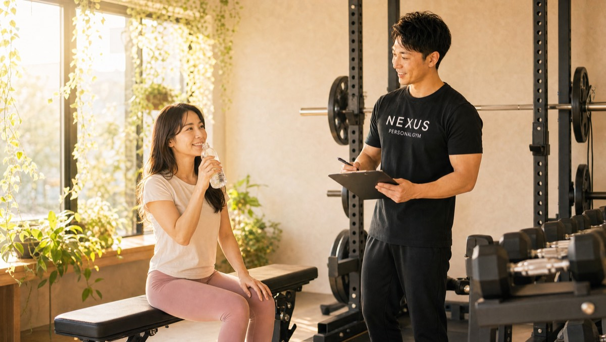
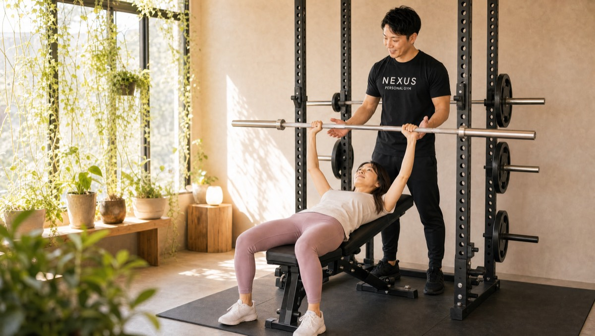
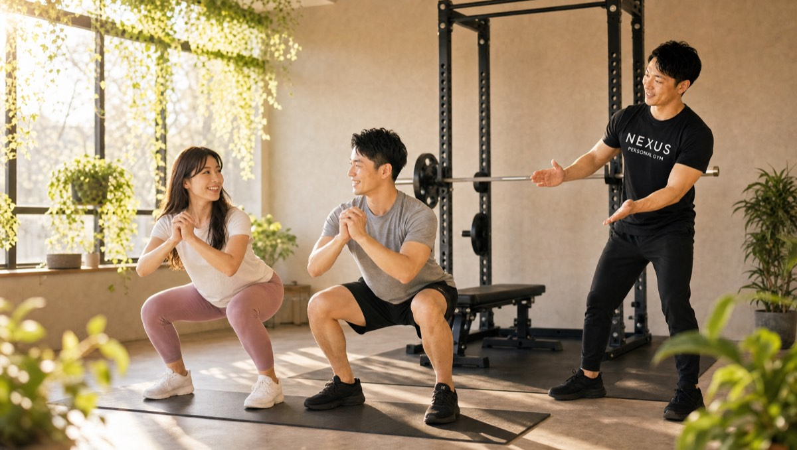

NEXUS Personal Gym ／ 東京都大田区
NEXUSパーソナルジム 蒲田・蓮沼店｜シフト勤務でも続く完全個室ジム

東急池上線・蓮沼駅、多摩川線・矢口渡駅、JR蒲田駅から通える、完全個室の隠れ家パーソナルジムです。蒲田は、病院・工場・飲食・空港関連などシフトで働く人が多い街。「毎週同じ曜日・時間に通えない」——そんな方でも続けられるよう、毎日8:00〜23:00営業×固定曜日不要、LINEでの柔軟な予約対応を強みにしています。手ぶらOK。あなたのシフトに、トレーニングをはめ込めます。
- 完全個室
- シフト勤務OK
- LINEで柔軟予約
- 毎日8:00〜23:00
- 蓮沼・矢口渡・蒲田から
この店舗の特徴
NEXUS蒲田・蓮沼店は、東急池上線・蓮沼駅、多摩川線・矢口渡駅、JR蒲田駅から通える完全個室のパーソナルジムです。蒲田エリアは、病院・工場・飲食・空港関連など、シフト制で働く方が多い街。だからこそ蒲田・蓮沼店は、「毎週決まった曜日・時間に通えない人」でも続けられることを一番に考えています。毎日8:00〜23:00営業で固定曜日に縛られず、予約・変更・キャンセルはLINEでサッと完結。夜勤明けの朝も、遅番前の昼も、その週のシフトに合わせて通えます。トレーニングでは、狙った部位に確実に効かせるフォーム指導と、不規則な生活リズムにも寄り添う食事サポートを提供。ウェア・タオル・ドリンク・プロテインまで無料の手ぶら通いにも対応しています。
シフトが読めなくても、続けられる

「今月はシフトがバラバラで、決まった時間にジムなんて通えない」——そんな方こそ、蒲田・蓮沼店の柔軟な予約体制がぴったりです。毎日8:00〜23:00営業だから、夜勤明けの朝も、遅番前の昼も、早番のあとの夕方も、その週のシフトに合わせて予約できます。会員からは「LINEでサッと予約でき、急な予定変更にも柔軟に対応してくれる。忙しくても通いやすい環境」という声をいただいています。予約・変更・キャンセルはすべてLINEで完結し、6時間前まで無料で変更可能。「固定曜日の縛り」がないから、勤務が不規則でも、トレーニングを生活に組み込めます。続けられない理由を、環境の側からなくしていきます。
LINEで簡単に予約でき、急な予定変更にも柔軟に対応してくれます。仕事が不規則で忙しいのですが、それでも通い続けられる環境が本当にありがたいです。完全個室で集中できるのも良いです。
狙った部位に、確実に効かせる

限られた時間で結果を出すには、一回一回のトレーニングの質が肝心。蒲田・蓮沼店では、狙った部位に確実に効かせるフォーム指導に力を入れています。会員からは「毎回ていねいにフォームを直してくれるから、効かせたい部位にしっかり効く。トレーニングの質が激変した」という声をいただいています。自己流ではなかなか効かせられない部位も、担当トレーナーがマンツーマンで角度や重心を細かく調整。同じ回数でも、正しいフォームで行えば効果はまるで違います。忙しくて頻繁には通えない方こそ、一回の密度を高めることが近道。完全個室で人目を気にせず、集中して追い込めます。
毎回ていねいにフォームを直してくれるので、効かせたい部位にしっかり効きます。トレーニングの質が激変しました。完全個室で集中でき、手ぶらで通えるのもありがたいです。
生活が不規則でも整う食事指導
シフト勤務で悩ましいのが、食事の時間の乱れ。夜勤明けに何を食べればいいのか、深夜勤務の前後はどうするか——生活リズムが不規則だと、食事管理はどうしても難しくなります。蒲田・蓮沼店では、月額3,000円（税込）のAI食事指導で、そんな不規則な毎日にも寄り添います。会員からは「無理のない食事アドバイスで体脂肪が着実に減っている」「生活全体を見直すきっかけになった」という声をいただいています。写真を送るだけで、あなたの勤務リズムに合わせた「無理なく続く食べ方」をサポート。極端な制限ではなく、続けられる範囲で整えるから、リバウンドしにくいのも特徴です。トレーニングと食事の両面から、着実に変化を後押しします。
蒲田・蓮沼・矢口渡から通える立地
NEXUS蒲田・蓮沼店は、複数の駅から通える便利な立地です。東急池上線・蓮沼駅からは徒歩圏内で、日々の通勤・通学の動線に組み込みやすい距離。東急多摩川線・矢口渡駅からもアクセスでき、多摩川線沿線にお住まいの方も通いやすくなっています。さらに、JR・東急・京急が乗り入れるターミナル駅・蒲田駅からも徒歩でアクセス可能。乗り換えの多い蒲田で働く方も、仕事帰りに立ち寄れます。住所は大田区東矢口3-27-5 ハイムKOYOSHI 201。複数路線から通えるので、引っ越しや転職で生活動線が変わっても、通い続けやすいのが魅力です。詳しい行き方は、下記の地図でご確認ください。
2人での利用もOK

「ひとりだとサボってしまいそう」「まずは気軽に始めたい」——そんな方には、2人で受けられるセミパーソナルがおすすめです。職場の同僚や、ご家族・パートナーと一緒に、ひとつの個室でトレーニング。お互いに励まし合いながら続けられるので、モチベーションが保ちやすくなります。料金は60分月2回で11,000円（税込・1回5,500円）と、通常のパーソナルより気軽なのも魅力。シフトが合う同僚同士で「勤務明けに一緒に」といった通い方もできます。もちろん、それぞれの目標や体力に合わせてトレーナーがメニューを調整するので、レベルが違っても大丈夫。2人だからこそ続く、新しいトレーニングのかたちです。
料金プラン
入会金は通常55,000円、無料体験当日入会で15,000円（税込）に割引。全店舗共通の料金です。
アクセス
- 店舗名
- NEXUSパーソナルジム 蒲田・蓮沼店
- 住所
- 〒146-0094
東京都大田区東矢口3-27-5 ハイムKOYOSHI 201 - 最寄り駅
- 東急池上線 蓮沼駅／東急多摩川線 矢口渡駅／JR・東急・京急 蒲田駅
- 営業時間
- 毎日 8:00〜23:00
- 電話番号
- 050-1790-8486
Googleマップの口コミ
出典：Google マップ
NEXUS蒲田・蓮沼店はGoogle口コミ★4.9・75件。LINEでの柔軟な予約対応と、狙った部位に効かせるフォーム指導が評価されています。
LINEで簡単に予約でき、急な予定変更にも柔軟に対応してくれます。仕事が忙しくても通い続けられる環境で、無理なく通えています。個室で集中できるのも続けられる理由です。
フォーム修正がていねいで、トレーニングの質が激変しました。完全個室で人目を気にせず集中でき、手ぶらで通えるのもありがたいです。狙った部位にしっかり効いています。
目標に合わせた緻密なメニューで、無理なく結果が出ています。運動初心者でしたが、優しく指導してくれるので安心して続けられています。食事のアドバイスも無理がなく助かります。
蒲田・蓮沼店のよくある質問
Q蒲田・蓮沼エリアで完全個室のパーソナルジムはありますか？+
Qシフト勤務で毎週同じ時間に通えません。大丈夫ですか？+
Q雑色店との違いは何ですか？+
よくある質問（全店共通）
料金・制度などNEXUS全店に共通するご質問です。さらに詳しくは110問のFAQをご覧ください。
Q料金はいくらですか？+
Q手ぶらで通えますか？+
Qキャンセルはいつまでできますか？+
Q食事指導はありますか？+
Qトレーナーはどんな人ですか？+
Q女性会員は多いですか？+
Q体験の流れは？+
NEXUSパーソナルジムの特徴・料金をもっと見る